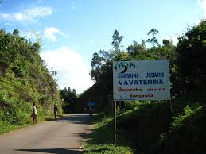
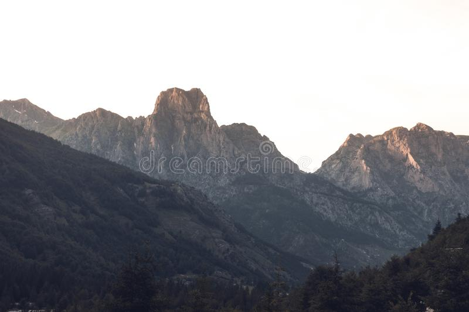

What do you know about Vavatenina?
History about Vavatenina
When there were colonisaters here in Madagascar, Vavatenina was still a very small town hidden in the forest. Before entered in that town you could see a gate made of some plants called "tenina". When there were colonisaters here in Madagascar, Vavatenina was still a very small town hidden in the forest. Before entered in that town you could see a gate made of some plants called "tenina".
Meaning:
Gate means vavahady in malagasy and tenina is a kind of plant. They combined those two words and it gets Vavatenina. That is the reason why they call it Vavatenina. Gate means vavahady in malagasy and tenina is a kind of plant. They combined those two words and it gets Vavatenina. That is the reason why they call it Vavatenina.
About the culture
Malagasy has a particular society that has their own beleifs, and the ways of life.
Betsimisaraka is a kind of Malagasy tribe. People in vavatenina are Betsimisaraka. Every season of
cloves product they celebrate it which is called Festival Jerijery.
The form of this town
It is moutainous town serounded by a river called Sahavatoina.
Some people there survive from that river by searching poweder golden. And that can afford people's lives who have not job or some land for farming.
Recommendation
That is Vavatenina. I highly recommende you to visit this village and you will get more about it.